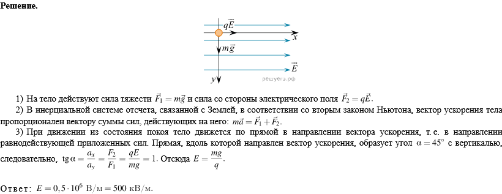
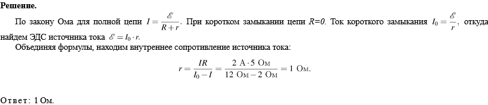
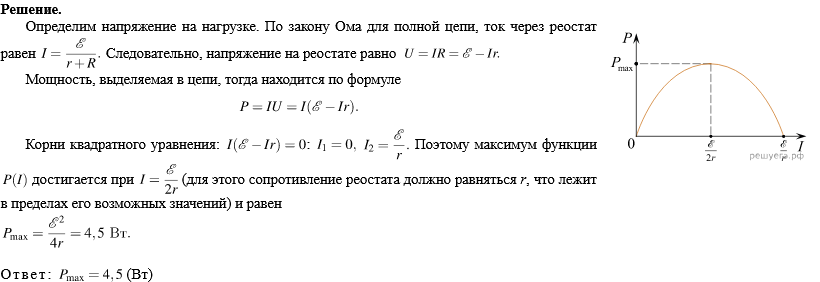
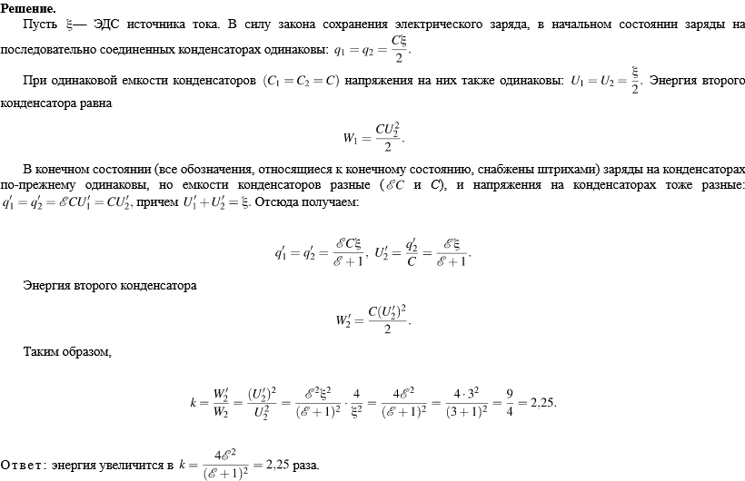
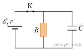
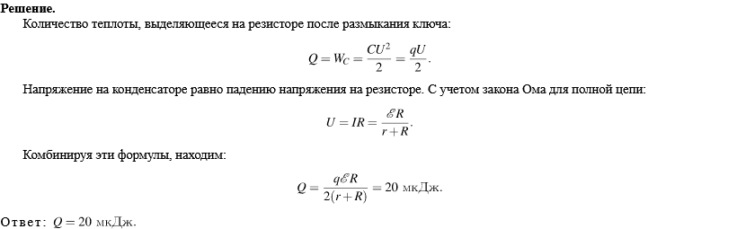

1.Полый шарик массой m = 0,3г с зарядом q = 6нКл движется в однородном горизонтальном электрическом поле из состояния покоя. Траектория шарика образует с вертикалью угол альфа = 45 градусов. Чему равен модуль напряженности электрического поля Е?

2. При коротком замыкании выводов аккумулятора сила тока в цепи равна 12 А. При подключении к выводам аккумулятора электрической лампы электрическим сопротивлением 5 Ом сила тока в цепи равна 2 А. По результатам этих экспериментов определите внутреннее сопротивление аккумулятора(Ответ дайте в кулонах.)

3.Электрическая цепь состоит из источника тока и реостата. ЭДС источника 6В, его внутреннее сопротивление r = 2Ом. Сопротивление реостата можно изменять в пределах от 1 Ом до 5 Ом. Чему равна максимальная мощность тока, выделяемая на реостате?

4. Два одинаковых воздушных конденсатора соединены последовательно и подключены к источнику постоянного напряжения. Затем один из них, не разрывая цепь, опустили в масло с диэлектрической проницаемостью \mathcalE =3. Как и во сколько раз при этом изменится энергия второго конденсатора, который остался не погружённым в масло?

5. В электрической схеме, показанной на рисунке, ключ К замкнут. Заряд конденсатора q = 2мкКл, ЭДС батарейки 24В, её внутреннее сопротивление r=5Ом, сопротивление резистора R= 25Ом. Найдите количество теплоты, которое выделяется на резисторе после размыкания ключа К в результате разряда конденсатора. Потерями на излучение пренебречь.

